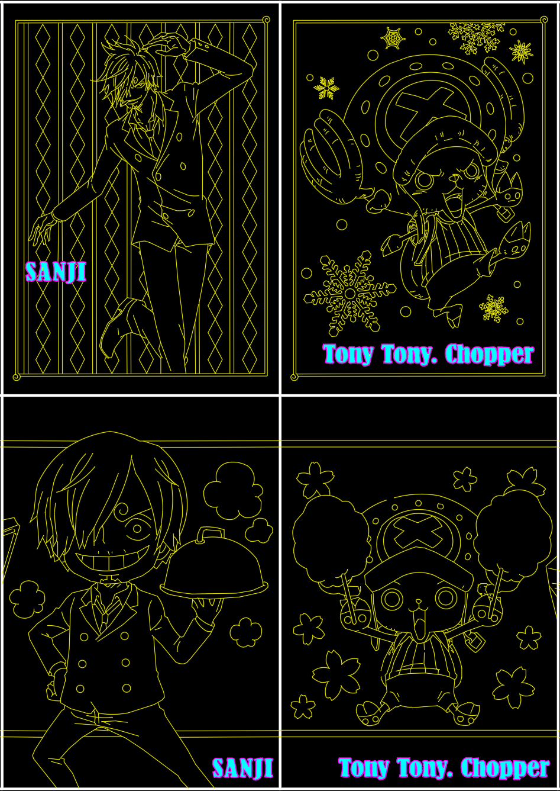
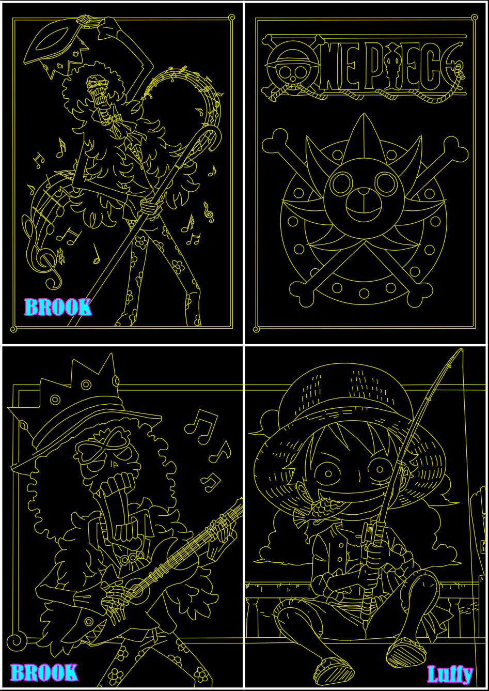
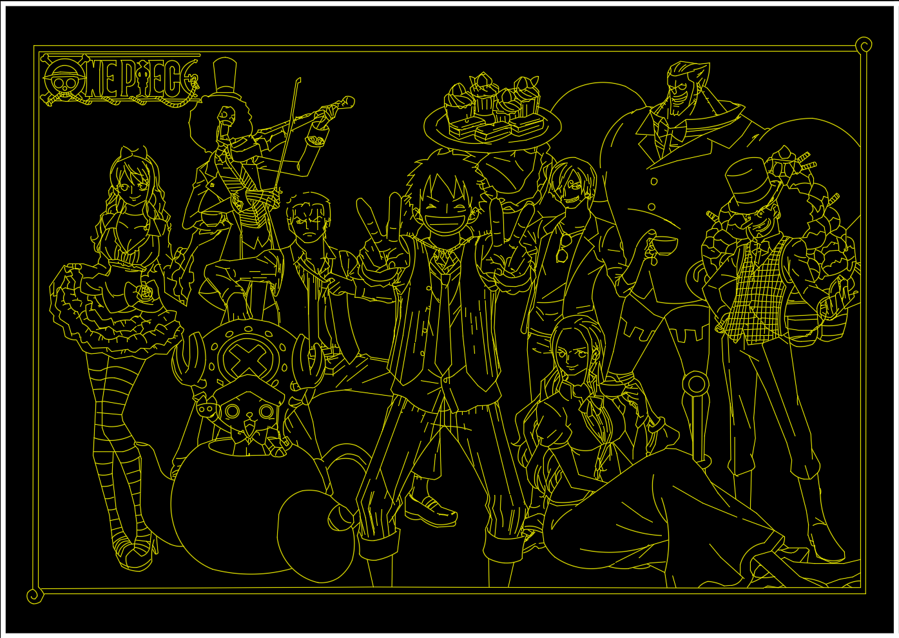
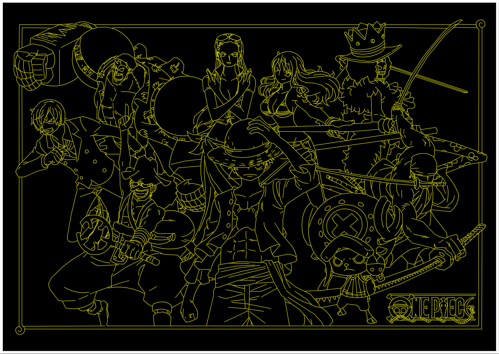
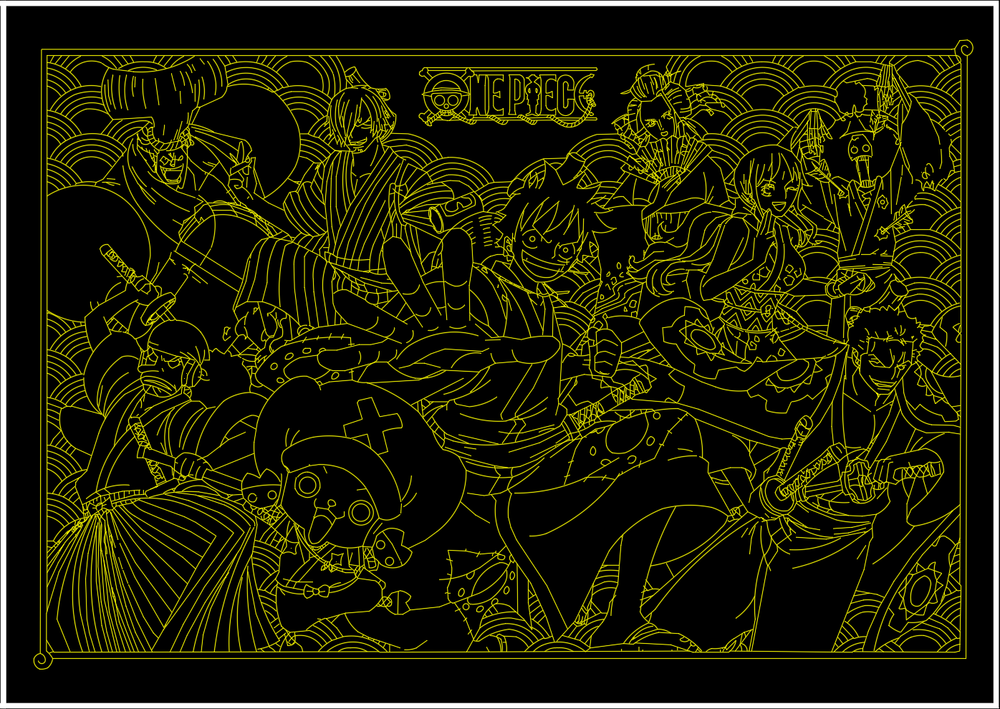

[優惠]慶祝AutoCAD顧問十七週年の恆專業 續傳承
https://www.autocad-tw.com/t30053-topic





👇海賊王DWG 下載（在文章最下方的「📎 附件下載」）👇
👇專屬B會員免回文下載
[專屬B分享]海賊王圖塊下載
https://www.autocad-tw.com/t29500-topic
👇延伸閱讀:
[分享] Q 版人物 DWG 圖塊
https://www.autocad-tw.com/t29042-topic
👇加入專屬B會員說明
https://www.autocad-tw.com/t25159-topic
👇新加入的朋友或未完成報到，如何升等一般會員，請看以下說明即可回文取得網址免費下載